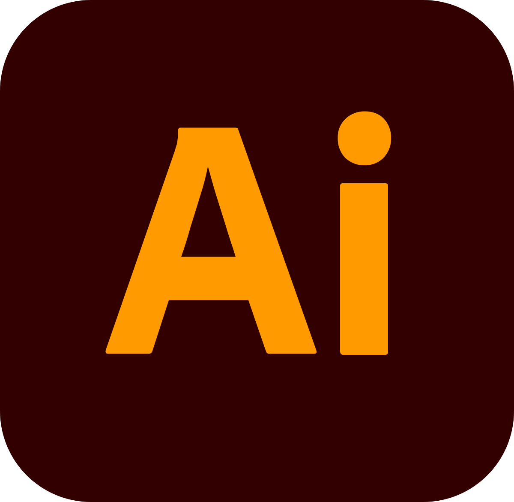

-

Illustrator: Um software de design gráfico vetorial da Adobe, amplamente utilizado para criar logotipos, ilustrações, ícones e gráficos escaláveis.
-
Photoshop: Especializado em edição de imagens raster, é uma das ferramentas mais poderosas para manipulação de fotos e criação de gráficos complexos.
-

HTML: A linguagem padrão usada para criar páginas da web, definindo a estrutura e o conteúdo de um site, como títulos, parágrafos, imagens e links.
-

CSS: Utilizado em conjunto com HTML, o CSS define a aparência visual de uma página web, controlando layout, cores, fontes e espaçamento.
-

JavaScript: Uma linguagem de programação que permite adicionar interatividade e dinamismo a sites, criando animações e aplicações web interativas.
-

Node.js: Um ambiente de execução de JavaScript do lado do servidor, permitindo a criação de aplicações back-end escaláveis e eficientes.
-

TypeScript: Extensão do JavaScript que adiciona tipagem estática opcional, ajudando a evitar erros e criar código mais robusto em grandes projetos.
-
Adobe Premiere: Um software de edição de vídeo da Adobe usado para criar e editar filmes, vídeos e outros conteúdos audiovisuais.
-
Figma: Ferramenta de design de interface de usuário que permite criação colaborativa de protótipos e wireframes para sites e aplicativos.